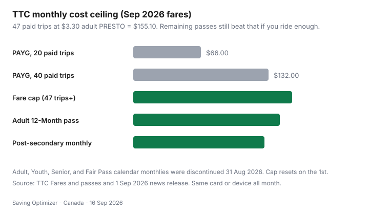

Transportation · Canada
How TTC monthly fare capping works in 2026—and when the 12-Month PRESTO pass still wins
Toronto riders spent years deciding, on the last weekend of the month, whether a $156 adult pass was “worth it.” That product is gone. On 1 September 2026 the TTC turned most calendar monthlies off and turned monthly fare capping on: pay as you go with the same card or device, and after 47 paid trips the rest of that calendar month is free.
The new trap is not buying the wrong pass. It is keeping the old mental model — or tapping a different card mid-month and never hitting the free-ride threshold. This is a TTC how-to, not a U.S. OMNY explainer. Pair it with the national overview in spend less on getting around and the GO math in PRESTO monthly vs PAYG.
Disclosure: No natural affiliate fit on TTC fares. Official figures below are from TTC public pages and the 1 Sep 2026 news release, reviewed 16 Sep 2026. Fares change — confirm at ttc.ca/Fares-and-passes before you budget a year.
Key takeaways
- Cap: 47 paid TTC trips, same PRESTO / debit / credit / wallet, then free until the 1st. Adult PRESTO $3.30 → $155.10 ceiling (was $156 monthly).
- A paid trip is the first tap that starts the two-hour transfer. Extra taps in that window are free and do not count toward 47.
- Adult 12-Month at $143/month still beats the cap if you ride enough every month of the contract. Post-secondary monthly is $128.15 with a TTC Photo ID.
- Youth, senior, and Fair Pass riders generally want PRESTO with the right fare type — open-loop credit usually charges the adult $3.30.
- GO / One Fare transfers that arrive on the TTC for free do not count toward the TTC 47.
What changed in September 2026: fare capping replaces most monthly passes
TTC’s 1 September 2026 release is blunt: monthly fare capping is in effect; you must keep tapping for Proof-of-Payment; Youth, Adult, and Senior monthly passes plus Youth and Senior 12-Month passes are discontinued. Adult 12-Month subscribers and post-secondary students who buy the Post-Secondary Monthly Pass “should continue to buy these passes, as they guarantee the lowest fare and best value.”
You do not opt in. There is no app toggle. Eligible payments — physical PRESTO, PRESTO in a mobile wallet, Interac debit, credit, including wallets — accumulate on that token. PRESTO tickets and cash do not count toward the cap. Cash is still $3.35 adult.
| Payment | Adult | Youth 13–19 | Senior 65+ | Fair Pass |
|---|---|---|---|---|
| PRESTO card | $3.30 | $2.35 | $2.25 | $2.10 |
| Debit / credit / wallet | $3.30 | $3.30* | $3.30* | $3.30* |
| Cash | $3.35 | $2.40 | $2.30 | $3.35* |
*Open-loop and some cash lines do not carry the concession. If you qualify for youth, senior, Fair Pass, or post-secondary products, use PRESTO (and the right ID), not a random Visa.
The 47-trip cap math at current adult PRESTO fares

Worked adult month (labelled):
- 10 paid trips (light hybrid): 10 × $3.30 = $33.00. Cap unused. Do not buy a 12-Month to “save.”
- 24 paid trips (about 12 office days, two taps that start a transfer each day): 24 × $3.30 = $79.20.
- 40 paid trips: $132.00 — still under the old $156 pass, and under the cap.
- 47+ paid trips: $155.10, then free. Two-a-day for a 30-day month without a cap would have been 60 × $3.30 = $198; CBC noted about $42.90 saved versus uncapped PAYG in that cartoon month.
Youth PRESTO $2.35 × 47 = $110.45. Senior $2.25 × 47 = $105.75. Fair Pass $2.10 × 47 = $98.70. Those groups lost calendar monthlies, so the cap is the monthly product.
Transfers are not extra paid trips. Board at 8:05, transfer at 8:40, enter a station at 9:50 — still one paid trip if you are inside two hours of the first tap. Evening return is trip two. That is why “47 trips” is not “47 vehicle boards.”
Why you must tap the same card or device all month
The TTC’s fare-capping explainer says it twice because riders will ignore it once: same payment method and the same card or mobile device throughout the month. Physical PRESTO, PRESTO on iPhone, PRESTO on a watch, and a credit card in Google Wallet are four counters. Split 24 and 23 and you pay $155.10 of fares and get zero free rides.
Pick one token on 1 September — or the 1st of any month — and make it boring. If you lose a phone, do not “just use the plastic this week” unless you accept a reset. After you cap, keep tapping. Fare inspectors still want Proof-of-Payment; a capped rider who does not tap looks like a skipper.
When Adult 12-Month and post-secondary monthly passes still beat PAYG
| Product | Price | Who it is for | Beats the cap when… |
|---|---|---|---|
| Adult 12-Month (PRESTO contract) | $143.00 / month | Adults who will ride heavily for a full year | You would hit the $155.10 ceiling most months. Savings ≈ $12.10 × months you would have capped, minus months you travel little. |
| Post-secondary monthly | $128.15 | Students with a TTC Post-Secondary Photo ID | Almost always vs adult $3.30 PAYG. Needs ID from Bathurst Photo ID ($5.25) or campus visits ($7.00) for 2026–27 (cards from 15 Aug 2026). |
Break-even sketch for the 12-Month: $143 versus PAYG. If you average 43 paid adult trips a month, PAYG is min(43 × 3.30, 155.10) = $141.90 — toss-up. If you average 47+, PAYG is $155.10 and the pass wins by $12.10 a month ($145.20 a year) if you never have a low month. Two months of vacation or full remote at 15 trips ($49.50 each) and the contract looks expensive: you still pay $143 those months.
Subscribe at prestocard.ca. TTC still said September 2026 passes were on sale until 8 September — calendar passes, when they exist, have a sales window. The 12-Month is a contract; do not treat it like a Flipp coupon you can drop in October.
Post-secondary: load the monthly at prestocard.ca, the PRESTO app, Shoppers Drug Mart, or a PRESTO outlet, with the Photo ID fare type set. Students 19 and under who only need the youth single fare should set Youth on PRESTO instead of paying adult $3.30 while they wait for a pass.
GO Transit and regional transfers: what capping does and does not cover
TTC’s regional page: monthly fare capping applies only to eligible TTC trips. Agency caps are separate. If your trip starts on the TTC, that paid tap counts. If you transfer from GO (or another One Fare agency) onto the TTC for free, that TTC tap does not count toward 47.
One Fare, in short (confirm windows on ttc.ca / gotransit.com): tap the same method; TTC→GO within two hours can reimburse the TTC portion; GO→TTC can be a free TTC ride inside the GO transfer window (up to three hours from the first GO tap in TTC’s write-up). GO e-tickets are not One Fare. A remaining TTC pass does not add a GO discount — TTC says pass holders “do not receive any additional discounts when transferring to GO Transit.”
UP Express, MiWay, YRT, Brampton, Durham have their own products. Do not assume 47 TTC taps cheapen a GO corridor. Price GO on its own ladder in the companion guide.
A one-month tracking worksheet for new Toronto riders
- Pick one token before the 1st: one PRESTO card, or one phone wallet, or one credit card. Photograph it. Tell anyone who borrows your card that they are borrowing your cap.
- Log paid trips only. A notebook or a PRESTO activity screen. Count the tap that starts a two-hour window, not every streetcar board.
- Note GO days separately. If you start on GO, that TTC finish may be free and may not help the 47.
- At 47, keep tapping and stop thinking about fares until the 1st.
- On the 28th, compare: trips × $3.30 versus $143 12-Month versus doing nothing. One month of data beats a Reddit thread.
| Date | First tap (paid?) | Method | Running paid trips |
|---|---|---|---|
| Mon 3 | Yes — 8:12 King streetcar | PRESTO plastic | 1 |
| Mon 3 | No — 8:40 transfer inside 2h | Same | 1 |
| Mon 3 | Yes — 17:40 return | Same | 2 |
| Sat 8 | Yes — started on GO, TTC was One Fare | Same | 2 (no increment) |
Common mistakes that reset your trip count
- Apple Watch one week, plastic the next.
- Corporate virtual card that rotates numbers.
- Paying cash “just this once,” or a PRESTO ticket from a machine.
- A partner’s PRESTO for the afternoon (their cap, not yours).
- Assuming a two-hour transfer is a second paid trip — or the opposite, assuming a 2h10 commute is still one trip.
- Stopping tapping after 47 and arguing with an inspector.
- Buying a 12-Month because September felt busy, then working from home in January.
Fair Pass still exists as a fare type ($2.10 PRESTO). The Fair Pass monthly was discontinued with the others. If you qualify, get the fare type set; do not pay adult contactless out of habit.
For the rest of the country, Compass, OPUS, and other caps still matter — start at the overview. For GTA car-lite math, put this cap beside car TCO before you keep a downtown parking stall “for weekends.”
Sources & date stamps
- TTC, “Monthly fare capping now in effect at the TTC,” 1 Sep 2026.
- TTC, Fares and passes (including monthly/12-Month table: Adult 12-Month $143.00; post-secondary monthly $128.15; adult PRESTO $3.30) reviewed 16 Sep 2026.
- TTC, “Monthly fare capping launches September 1,” 13 Aug 2026 (discontinuations as of 31 Aug 2026).
- TTC, Regional travel and One Fare (TTC vs regional caps; pass holders and GO).
- CBC News, “TTC implements new fare capping system…,” 1 Sep 2026 ($155.10 ceiling; ~$3 million TTC cost estimate for 2026).
- TTC Post-Secondary Photo ID Card page (2026–27 cards from 15 Aug 2026; $5.25 Bathurst / $7.00 campus).
Frequently asked questions
When did TTC monthly fare capping start?
1 September 2026. After 47 paid trips in a calendar month on the same PRESTO, debit, credit, or mobile-wallet card, remaining TTC trips that month are free. Counts reset on the first of the next month.
How much is the adult cap at current PRESTO fares?
Adult PRESTO and contactless adult fares are $3.30 (TTC Fares and passes, reviewed 16 Sep 2026). Forty-seven trips × $3.30 = $155.10. Cash is $3.35 and does not count toward the cap.
Do Adult 12-Month and post-secondary passes still exist?
Yes. The TTC still sells an Adult 12-Month pass at $143.00 per month on a 12-month PRESTO contract, and a Post-Secondary Student Monthly Pass at $128.15. Youth, senior, adult calendar monthlies, Fair Pass monthlies, and youth/senior 12-month passes were discontinued 31 August 2026.
Does a GO transfer count toward the TTC 47-trip cap?
Only paid TTC trips that start on the TTC count. A free TTC ride through Ontario’s One Fare Program after a GO tap does not count as a paid TTC trip toward the cap. TTC and GO caps are separate.
What if I switch between my phone and a physical PRESTO card?
Trip counts are tracked per card or device. Switching mid-month splits the count, so you may never reach 47 on either method. Tap the same payment method every time, including after you have already capped.